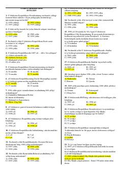

1O11-sinf O'zbekiston tarixi fanidan DTM test savollari to'plami.
Ushbu qo'llanma 11-sinf o'quvchilari uchun O'zbekiston tarixi fanidan DTM test savollari va ularning javoblarini o'z ichiga oladi. Unda mustaqillik yillaridagi tarixiy voqealar, qonunlar va islohotlarga oid test topshiriqlari keltirilgan.